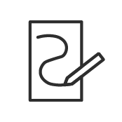

Voorwoord
Lottie is de nieuwe manier van animeren voor web. Veel programma’s, zoals adobe en figma werken inmiddels met lottiefiles. Je kunt veel verschillende dingen maken dankzij Lottie, zo kan je knoppen maken en interactieve elementen, zoals een loading screen. Ook kan je Lottie gebruiken voor de vormgeving van jouw website. Het tweede heb ik gebruikt voor mijn project. Ik wou mijn website interactiever maken door Lotties te maken die static afbeeldingen moet vervangen in animaties.